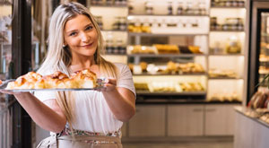

Casi 50 años
El olor a pan caliente es un viaje a los recuerdos... Bastará evocar los desayunos de la abuela, las mañanas en familia, un brunch con el diario tras el sueño prolongado del domingo, o esos barcitos con onda que tanto abundan por estos días. El noble pan nos acompaña en casi todas las comidas. Pero los años han ido modificando la clásica fórmula de harina, agua y levadura. Los panes blancos les dejaron lugar a las semillas, el salvado tomó la delantera y la levadura se despidió con el uso de la llamada masa madre.
Pan, empanadas y pasteles
Nuestra planta de producción de pan, pastelería y productos derivados de la harina, se sitúa a la vanguardia de la tecnología gracias a su almacén de harinas y obrador climatizados, a su control de temperaturas y humedades relativas en fermentación, corte automático, control de temperaturas en precocción y congelación.